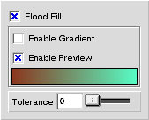

|
|
Fill-tool
The fill tool is used to fill a region of the image with a single color or with a gradient of two colors. The fill with single color is done by clicking on the image inside the area that needs to be filled. Filling the gradient is done by clicking on the area to be filled, holding down the button and adjusting the gradient by moving the mouse. The gradient will be finished when the mouse-button is released.
Settings
Figure 1 shows the contents of the tool-setup-window when it is displaying the setup for the fill-tool.
Figure 1: Setup view for the fill-tool.
| 
|
- Flood Fill
- When this option is enabled the fill will be done to a bounded area of single color. If the option is not checked, the fill will be done to all pixels in the image that have the same color as the pixel that initiated the fill.
- Enable Gradient
- When this option is checked the fill will be done as a gradient of the two gradient colors. Otherwise the fill will be done using the single foreground color.
- Enable Preview
- When this option is checked the gradient will be previewed in realtime as it is adjusted. If the option is not checked the gradient will not be previewed.
- Gradient color bar
- This color-bar shows what the gradient will look like. You can change the gradient by dragging colors from the color-window to either end of the bar.
- Tolerance
- This option controls how closely the colors must match in order to be considered as the same color by the fill-tool. If the value is 0, the colors must match exactly. If the value is 100, all colors are considered to be the same.
|